Subsurface Modeling#
Michael J. Pyrcz, Professor, The University of Texas at Austin
Twitter | GitHub | Website | GoogleScholar | Geostatistics Book | YouTube | Applied Geostats in Python e-book | Applied Machine Learning in Python e-book | LinkedIn
Chapter of e-book “Applied Machine Learning in Python: a Hands-on Guide with Code”.
Cite this e-Book as:
Pyrcz, M.J., 2024, Applied Machine Learning in Python: A Hands-on Guide with Code [e-book]. Zenodo. doi:10.5281/zenodo.15169139

The workflows in this book and more are available here:
Cite the MachineLearningDemos GitHub Repository as:
Pyrcz, M.J., 2024, MachineLearningDemos: Python Machine Learning Demonstration Workflows Repository (0.0.3) [Software]. Zenodo. DOI: 10.5281/zenodo.13835312. GitHub repository: GeostatsGuy/MachineLearningDemos 
By Michael J. Pyrcz
© Copyright 2024.
This chapter is a summary of Subsurface Modeling including essential concepts:
What is Subsurface Modeling?
The Subsurface Data
Modeling Purpose
Strategies for Modeling
YouTube Lecture: check out my lecture on Spatial, Subsurface Concepts. For your convenience here’s a summary of salient points.
Motivation for Subsurface Modeling#
You could open a Jupyter notebook in Python and immediately start building machine learning models to solve subsurface problems.
But you would be building on a shaky foundation.
Successful data science begins with understanding the problem domain. Before selecting algorithms or writing code, you need to understand the subsurface, the available data, the objectives of the modeling effort, and the practical constraints under which the model will be developed and used.
This chapter introduces the fundamental concepts that provide this foundation, including,
Subsurface Models — what they are, why they are built, and the different forms they can take.
Subsurface Data — the major data types, their relationships, associated metadata, methods of collection, strengths, and limitations.
Modeling Purpose — the goals of the model, its intended products and users, and ultimately the decisions the model is designed to support.
Modeling Strategies — practical principles, workflows, trade-offs, and fit-for-purpose approaches for developing effective subsurface models.
Together, these concepts provide the context needed to develop robust data science workflows using the methods presented throughout this e-book.
Subsurface Modeling#
What is subsurface modeling? I start my second day lecture with this question and a blank slide on the screen. I wait for students to provide their feedback. I am fortunate to have a variety of departments represented in your courses, and this is a sumamry of what they often say,
engineering students - flow forecasting with a physics-based model, to learn how fast and how much will be recovered from our wells and to ensure this model matches historical, past, production rates and composition.
geoscience students - building a subsuface heterogeneity model that intergrates, basin analysis, well logs and well cores, inverted seismic attributes, to learn what is the resource in place.
data science students - a statistical data-driven model that is calibrated against withheld testing data.
business students - an uncertainty model that support optimum business development decision making.
environmental students - an accurate prediction model that allows for extraction while minimizing environmental disturbance, protecting health and safety of the employees and communities.
Which is subsurface modeling?
it is all of these.
This is one of the reasons that students from all over our campus enjoy and benefit from this content.
Subsurface Modeling Aspects#
Calculating a numerical representation of the subsurface:
over the interval (volume in space, or time) of interest
over the features of interest
integrating all information sources
integrating uncertainty through multiple realizations and scenarios
to support decision making
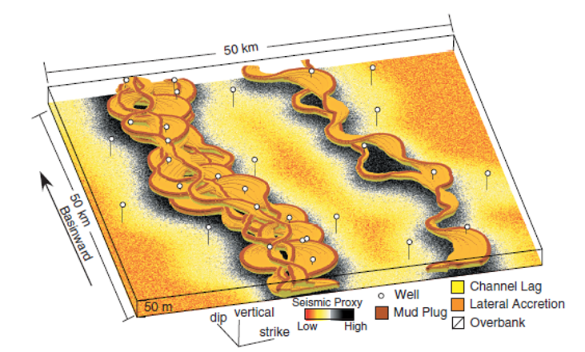
The Volume of Interest#
The volume of interest or area of interest is the volume of the subsurface modeled, and could be,
2D map from a single reservoir to a basin to the entire Gulf of America (Gulf of Mexico)
2D cross section of a single reservoir unit, to the entire reservoir to the entire sediment package from the mudline to the maximum depth of resolvability
3D model of near bore at the scale from 1 cm3
3D model of a single reservoir at the model cell scale of 50 x 50 x 1 m
For all of these volumes and areas, the scale and extent is determined by,
purpose of the model – e.g. forward seismic model requires the overburden be included
geologic interpretation – e.g. geological unit of interest onlaps uninteresting unit
engineering constraints – e.g. drainage radius of a well, flow boundaries
is often subset into a variety of regions that are modelled separately.
The Features of Interest#
The feature of interest generally include, measures of rock and fluid properties, for example,
porosity
permeability
saturations
lithology
acoustic impedance
informative for the resolving subsurface forecasts, for example,
resource volumes
flow rates
recovery factor
Based on direct or indirect measures of the subsurface,
direct measures often have limited coverage, small scale, but high accuracy, for example, porosity from well cores
indirect measures often have exhaustive coverage, but with larger scale and lower accuracy, for example, seismic information
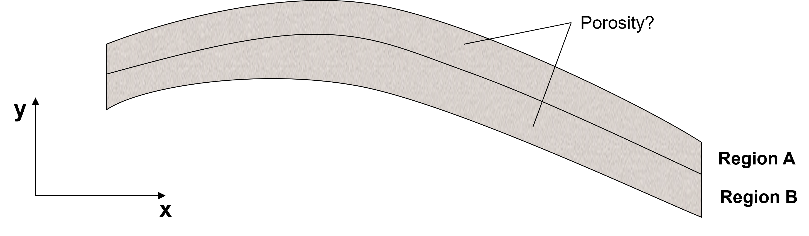
Information Sources#
The subsurface data come from a variety of information sources, including,
well or drill hole-based - for local conditioning data, spatial statistics, and high resolution local trend models
remote sensing with seismic or gravity information - to support model extents determination, trend models and stationary domain segmentation
basin or deposit analysis - large scale modeling to support model choice, model parameter inference and uncertainty modeling
production or run of mine samples - output from the extraction opperations that support inverse modeling workflows to estimate the feature models between the data
subsurface modeling is a data integration challenge
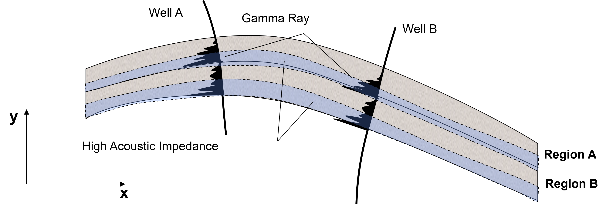
Subsurface Uncertainty Models#
Subsurface uncertainty is modeled and communicated through the deisgn and calculation of multiple models, including,
scenarios – based on changing the model assumptions and decisions, to capture measurement uncertainty and error along with model parameter inference uncertainties
realizations - while holding model assumptions and decisions constant, apply new random seeds that cause the models to fluctuate away from the data and under the constraint of model choices and model parameters, to capture spatial uncertainty
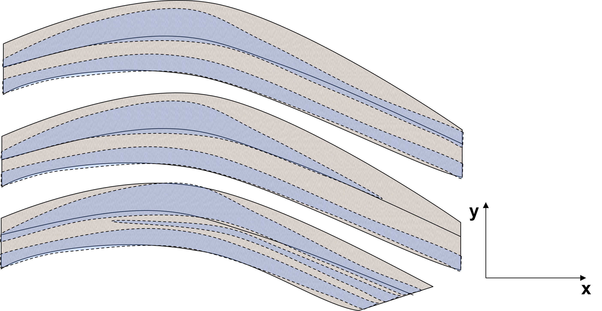
Support Decision Making#
Often subsurface modeling is applied as support for decision making,
modeling only adds value when it impacts a decision
subsurface modeling is decision support, the actually development decision has many other constraint, including contracts, resources, safety and multiproject company-wide strategies
decisions are made considering all scenarios and realizations simultaneously
For example, where to place these injector wells for a water flood, secondary recovery?
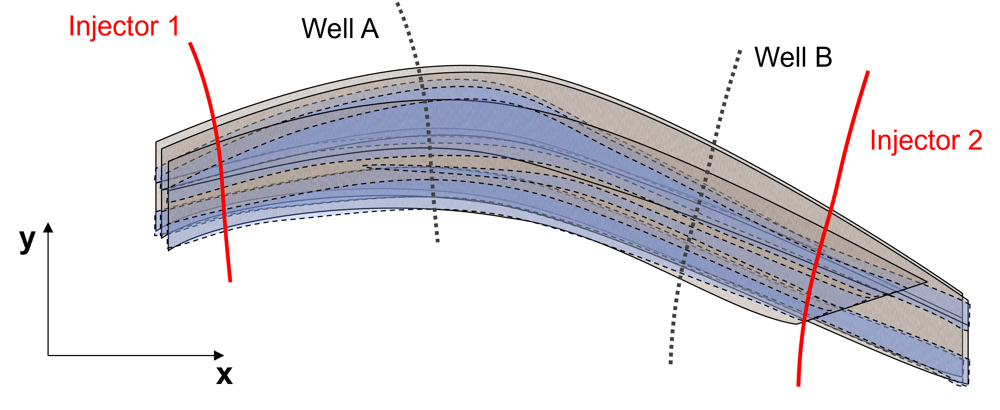
Numerical Model#
A subsurface model can be generalized as a numerical model that is based on,
quantification - summaries of data, analog inforamtion and expert judgement to calculate summary spatial statistics and trends over the subsurface volume of interest
reproduction – impose spatial reservoir property distributions over the subsurface volume of interest that reproduce the quantification to support decision making
This approach of quantification and reproduction is critical to,
subsurface model construction based on multi-displinary teams
model checking through closing the loops, i.e., do the models reproduce the quantifications that were applied as inputs
model diagnostics and sensitivity studies that evaluate value of information and opportunity to improve model accuracy and reduce uncertainty
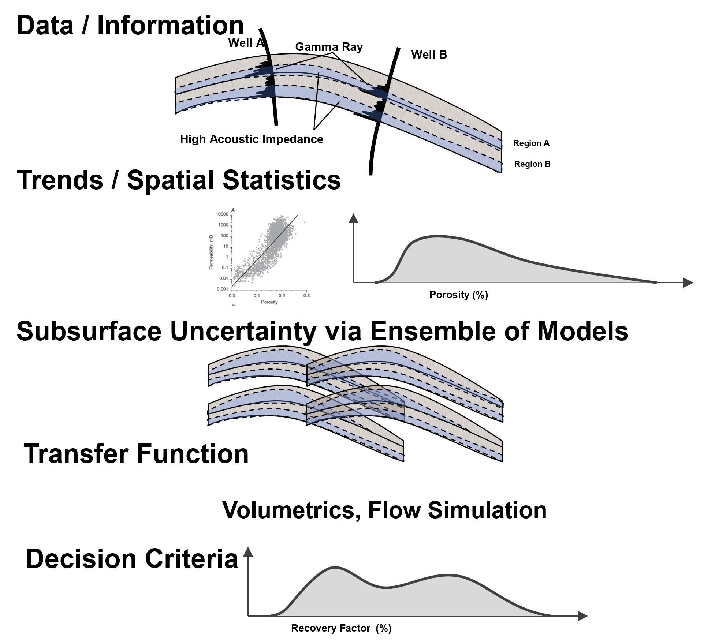
Subsurface Modeling Caveats#
While this e-book is focused on the subsurface for estimation and forecasting, methods taught in this e-book could be applied,
to any spatial problem, petroleum, mining, climate modeling, optimum EV charge station placement, etc.
to many multivariate and temporal problems
Yes, the context of subsurface resources is in many of the demonstrations, but the,
accessible descriptions of machine learning methods could be applied to any data science challenge.
Data for Subsurface Modeling#
Subsurface data are collected from a variety of sources. Each data source may be described by three fundamental characteristics:
Property – What property of the subsurface does the data measure?
Resolution – At what spatial or temporal scale is the property measured?
Coverage – Over what proportion of the subsurface is the property available?
Property – What property of the subsurface does the data measure? Examples include:
static properties that describe the reservoir at a point in time, including facies, porosity, permeability, mineralogy and saturation
dynamic properties that describe reservoir behavior through time, including pressure, flow rate, velocity, water cut and fluid composition
the most useful data are always related to the modeling objective
Resolution – At what spatial or temporal scale is the property measured? Examples include:
a 2 cm core plug
a 20 cm whole-core measurement
a gamma ray measurement that samples approximately 1 m into the formation every 20 cm along the well
seismic acoustic impedance with approximately 10 m vertical resolution
Coverage – Over what proportion of the subsurface is the property available? Examples include:
sparse core measurements
well logs available for every well
3D seismic covering the entire reservoir and overburden
Data Dimensionality#
Subsurface data are represented in one to four dimensions depending on how the property varies in space and time.
1D - data recorded in a sequence of distance or time
variation in vertical trend of mineralogy or mechanical properties
variation in a single well log, gamma ray (shale indicator)
production data rate or composition measured at a production well
2D - often used to support spatial interpretation
geologic maps with depositional systems, stationary regions and trends
core images with facies and sedimentary structures interpreted
correlated well logs with interpolation model between well along a section
exploration seismic sections with interpreted reservoir and non-reservoir within a stratgraphic framework
3D - micro, sector, reservoir and basin models
seismic volumes with inverted reservoir attributes
core tomography with pore-scale models
near well bore micro models
injection and production paired wells sector model
comprehensive reservoir model for production forecasting
4D – repeated measurements through time
time-lapse (4D) seismic
repeated pressure surveys
evolving saturation models
reservoir simulation predictions through time
Quantitative and Qualitative Data#
In subsurface modeling, data are often classified as quantitative or qualitative.
Quantitative data are numerical measurements that describe the magnitude of a property, such as porosity, permeability, pressure, temperature, or production rate.
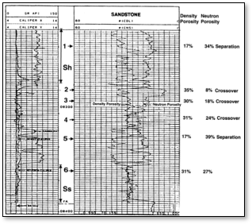
Qualitative data require interpretation before they can be represented in a subsurface model. Examples include lithology, facies, depositional environment, fault interpretations, and sequence stratigraphic units. Image below from sepmstrata.org.
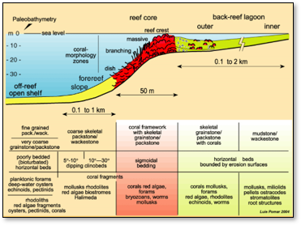
Terminology: In geostatistics and reservoir modeling, qualitative commonly refers to interpreted geological information. In machine learning and statistics, these data are more commonly referred to as categorical variables because they are represented as discrete classes (nominal or ordinal).
Hard and Soft Data#
In subsurface modeling, data are often classified as hard or soft based on the degree of measurement certainty and uncertainty.
Hard Data – measurements with a high degree of confidence that are treated as known values at their sample locations. Hard data are typically obtained from direct measurements. Examples include,
core porosity measurements
well log measurements
lithofacies interpreted from core or high-confidence well log analysis
Soft Data – indirect measurements or interpretations that provide information about the property of interest with an associated degree of uncertainty. Soft data are often represented as probabilities, distributions, or calibrated estimates. Examples include,
probability distribution of porosity inferred from seismic acoustic impedance
probability of lithofacies from seismic attributes
interpreted geologic trends and depositional environments
Primary and Secondary Data#
Subsurface features are also commonly classified as primary or scondary data based on their role in modeling.
Primary Data – the property of interest that is modeled directly.
Examples include,
porosity measurements used to build a 3D porosity model
permeability measurements used to model reservoir flow properties
facies observations used to construct a facies model
Secondary Data – another property that is correlated with the primary data and provides additional spatial information through a calibrated relationship.
Examples include,
acoustic impedance used to support porosity modeling
porosity used to support permeability modeling
seismic attributes used to support facies modeling
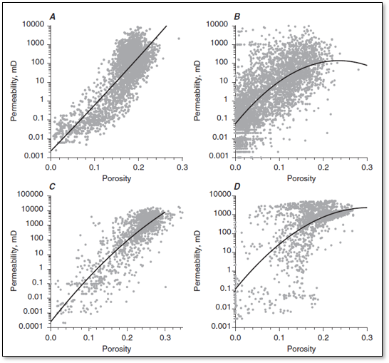
General Types of Subsurface Features#
Subsurface features are commonly represented using one of the following measurement scales.
the measurement scale determines which mathematical and statistical operations are meaningful for a feature.
Categorical Nominal Feature – discrete categories with no meaningful ordering, including,
Mineral type: quartz, feldspar, mica
Lithology: sandstone, shale, limestone
Depositional environment
Categorical Ordinal Feature – discrete categories with a meaningful ordering, but differences between categories are not necessarily equal, including,
Geologic age (youngest → oldest)
Mohs hardness scale
Reservoir quality ranking (poor, fair, good, excellent)
Continuous Interval Feature – numerical values with equal intervals, but an arbitrary zero, so ratios are not meaningful, including,
Temperature on the Celsius or Fahrenheit scale
Continuous Ratio Feature – numerical values with equal intervals and a true zero, so both differences and ratios are meaningful, including,
Temperature on the Kelvin scale
Porosity
Permeability
Fluid saturation
Pressure
Thickness
Production rate
Now a convenient table to summarize these data aspects,
Question |
|
|---|---|
Quantitative vs. Qualitative |
What type of information is available? |
Hard vs. Soft |
How certain is the information? |
Primary vs. Secondary |
What role does the information play in modeling? |
Categorical (Nominal/Ordinal) vs. Continuous (Interval/Ratio) |
How is the information represented? |
Now we are ready for a short summary of the various subsurface data sources.
this is a concise, high level summary of salient points
Core Data#
Let’s summarize core data using the concepts of property, resolution, and coverage.
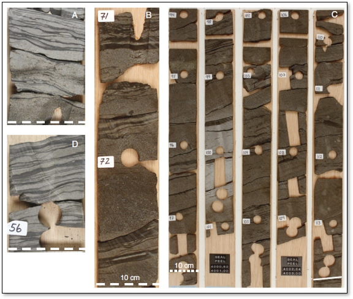
Core Data Property#
Core provides direct measurements and geological observations that anchor many other subsurface data sources, including,
petrophysical properties such as porosity and permeability measured directly from core samples, assuming limited core disturbance during extraction and handling
sedimentary structures that support interpretation of lithofacies, depositional facies, and depositional environment
fractures that may be directly observed in core, although observations are biased by fracture orientation relative to the core axis
essential support for petrology, mineralogy, and stratigraphic analysis
Core Data Resolution#
Core provides very high spatial resolution compared with most subsurface data sources, although the effective resolution depends on the measurement method.
Core samples can be analyzed through,
Routine Core Analysis (RCA) resulting in,
porosity, permeability, and fluid saturation measurements
core gamma logging for calibration to well logs
core tomography (CT) scans to assess pore structure and heterogeneity
Special Core Analysis (SCAL) resulting in,
electrical measurements for calibration of spontaneous potential (SP) and nuclear magnetic resonance (NMR) well logs
mercury injection capillary pressure for pore throat size distributions
relative permeability measurements for multiphase flow characterization
The scale or size of the core data is typically,
whole cores are commonly cut with diameters of 36–85 mm (BQ, NQ, HQ, and PQ) for mining and 2.5–4 inches for oil and gas applications
typical core runs include lengths of 1.5–3.0 m for mining and 9–30 m for oil and gas
Core Data Coverage#
Core coverage varies significantly between mining and oil and gas applications.
In mining, diamond drilling cores are commonly collected extensively for exploration and grade control, providing relatively dense spatial coverage.
In oil and gas, core acquisition significantly reduces drilling efficiency and increases cost. Therefore, cores are collected infrequently and are typically targeted to specific intervals of geological or reservoir interest.
Well Log Data#
Well logs are commonly applied in oil and gas to augment the limited availability of core samples and provide continuous measurements along the wellbore.
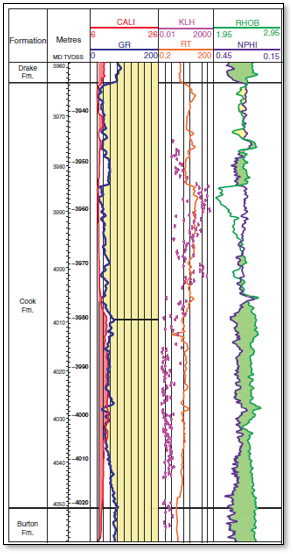
Well Log Data Property#
Well logs provide indirect measurements and geological observations that support many subsurface interpretations, including,
petrophysical properties such as porosity, saturation, and shale volume estimated from log responses
sedimentary structures that support interpretation of lithofacies, depositional facies, and depositional environment using borehole image logs
fluid types and important fluid contacts, including oil-water contacts and oil-gas contacts
stratigraphic analysis by integrating well log markers with seismic data to establish large-scale compartments, trends, and reservoir extent
Common well logs and interpreted subsurface properties include,
gamma ray – shale volume and facies interpretation
density – porosity estimation and facies interpretation
neutron porosity – porosity estimation and fluid effects
resistivity – fluid type, water saturation, and facies interpretation
Advanced well logs may also be acquired in selected wells, including,
borehole image logs – sedimentary structures, fractures, facies, and depositional setting
nuclear magnetic resonance (NMR) – porosity, pore-size distribution, fluid typing, and permeability estimation
formation pressure measurements – in situ pressure, fluid gradients, and reservoir compartmentalization
Well Log Data Resolution#
Well logs provide continuous measurements along the wellbore with high vertical resolution compared with most subsurface data sources. The effective resolution depends on the logging tool, formation properties, and logging conditions.
Conventional well logs commonly have,
vertical sampling intervals of approximately 15–30 cm (6–12 inches)
effective vertical resolution typically ranging from approximately 0.3–1 m depending on the logging tool and formation conditions
Borehole image logs provide higher-resolution observations of the near-wellbore environment, including,
electrical or ultrasonic images with millimeter-scale resolution
detailed interpretation of thin bedding, fine fractures, breakouts, and sedimentary structures
azimuthal information supporting structural and geomechanical interpretation
Well log measurements provide excellent vertical resolution along the wellbore. Image below from Schlumberger.
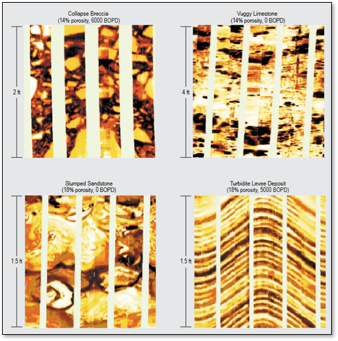
Well Log Coverage#
Well logs are relatively inexpensive compared with drilling and core extraction and are commonly acquired in oil and gas wells.
Well logs provide excellent one-dimensional coverage along wells, but poor total volumetric coverage due to commonly large well spacings.
prediction between wells requires integration with seismic, geological interpretation, and spatial modeling methods.
Remote Sensing-based Data#
In subsurface modeling, remote sensing refers to geophysical measurements that infer subsurface properties from measurements acquired at or near the surface. In oil and gas, the primary remote sensing method is reflection seismic, while in mining common remote sensing methods include gravity, magnetic, and electromagnetic surveys. Image below from Jafari et al., 2017
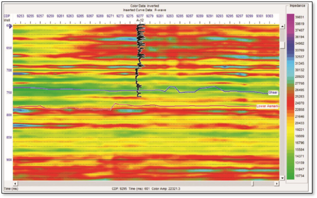
Remote Sensing Property#
Remote sensing measurements provide indirect observations of the subsurface and must be interpreted or inverted to estimate rock properties, including,
seismic acoustic impedance, a measure of resistance to seismic transmission (the product of density and seismic velocity)
seismic attributes related to lithology, fluids, and reservoir heterogeneity
density anomalies associated with mineralization and ore grade
Due to uncertainty in the depth location of remote sensing responses,
remote sensing interpretations must be positionally calibrated using well log and core data
Due to the non-uniqueness of geophysical inversion,
remote sensing-derived properties require calibration to distributions observed in wells and core data while accounting for differences in measurement support
After processing and calibration, remote sensing data provide the regional subsurface framework, including,
structural horizons and fault interpretation defining resource extent, geometry, stationary regions, and geological trends
acoustic impedance and seismic attributes supporting soft data models for reservoir properties such as porosity and facies, and providing stratigraphic correlation between wells
density anomalies supporting mining geological models, including rock type and mineral zone interpretation
Remote Sensing Data Resolution#
Remote sensing methods provide indirect measurements of subsurface properties over large spatial areas. The effective resolution depends on the physical measurement process, acquisition geometry, and processing methods.
Oil and Gas Reflection Seismic - reflection seismic surveys provide broad spatial coverage and are the primary geophysical tool for imaging subsurface structure and reservoir-scale features. Typical resolution includes,
Vertical resolution: approximately 10–50 m, controlled by seismic wavelength, frequency, and processing
Horizontal resolution: approximately 25–100 m, controlled by acquisition geometry, wave propagation, and depth
Reflection seismic provides excellent lateral coverage across fields and basins, but measurements are indirect and require calibration using wells and geological interpretation.
Mining Gravity Surveys - gravity surveys measure variations in the Earth’s gravitational field caused by density contrasts in the subsurface. Typical resolution includes,
Regional gravity surveys: kilometers to tens of kilometers
Exploration-scale gravity surveys: hundreds of meters to kilometers
Detailed ground gravity surveys: tens to hundreds of meters
Gravity surveys provide very large spatial coverage but have relatively low spatial resolution and significant non-uniqueness, requiring integration with geological, geochemical, and drilling data.
Remote Sensing Coverage#
Remote sensing coverage depends on the development stage and survey objectives. For oil and gas,
Exploration – 2D seismic lines are commonly acquired over large areas to identify structural and stratigraphic opportunities
Appraisal – 3D seismic volumes commonly cover discovered fields and surrounding areas to characterize reservoir architecture
Development – 4D time-lapse seismic surveys may be acquired to monitor fluid movement and optimize recovery
and for mining,
Exploration – regional gravity, magnetic, and electromagnetic surveys identify geological structures and potential mineral systems
Resource definition – detailed surveys are integrated with drilling and geological interpretation to define ore bodies
Production Data#
Production data represent the observed output response from a reservoir or ore body. Examples include,
oil and gas – production rate, fluid composition, water cut, pressure, and temperature by well
mining – run-of-mine or plant feed rate and grade measured from material delivered from the mine to the processing plant
Production data integration requires inverse modeling to understand the subsurface conditions that result in the observed response.
Salient questions include,
What subsurface state could produce the observed production response?
What does the production history reveal about reservoir or ore body behavior?
How can this information improve future production forecasts?
Production Data Property#
The subsurface resource industry challenge is to economically and safely extract resources while minimizing impacts to people and the environment.
Unlike other subsurface datasets, production data directly measure the economic response of the resource. Production properties include,
oil and gas production rates and fluid compositions
mining production rates and material grades
These observations provide the ultimate validation of subsurface models.
Production Data Resolution#
Production data resolution is highly variable and often challenging.
Oil and gas examples include,
Lowest resolution: production is commingled over multiple producing intervals or wells, representing the response of a large portion of the reservoir
Highest resolution: production logging tools (PLT) measure contributions from individual producing intervals within a well
Image below is from the American Association of Petroleum Geology Wiki
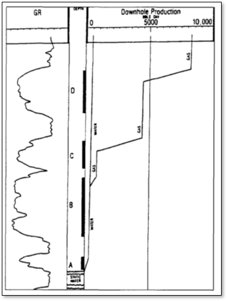
Mining examples include,
production data commonly require reconciliation between mine surveys, grade-control drilling, and plant measurements
typical production resolution may include weekly production from individual benches, stopes, or mining blocks
Production Data Coverage#
Production data are available throughout actively producing regions of the subsurface resource.
Unlike core, well logs, and seismic data, production data are continuously collected during resource extraction and provide a time-dependent record of system behavior.
Summary of Subsurface Data#
Now we can summarize all these data types in a single table,
For completeness, I have included analog types of data sources, analog reservoirs, outcrops, geomorphology, shallow seismic, experimental stratigraphy and numerical process models.
Data Source |
Resolution |
Coverage |
Property |
Certainty |
|---|---|---|---|---|
Very high (mm–cm scale) |
Well locations only |
Lithology, pore structure, sedimentary structures, direct rock properties |
Hard |
|
cm–m scale |
Along wells |
Facies, porosity, mineralogy, saturation, petrophysical properties |
Hard-calibraded |
|
Image Well Log |
mm–cm scale |
Near-wellbore |
Sedimentary structures, bedding, fractures, faults, geomechanical features |
Hard-calibrated |
~10 m scale |
Field to basin scale |
Structural framework, stratigraphic trends, seismic attributes, facies and property trends |
Soft |
|
10–100 m (drainage scale) |
Producing reservoir volume |
Volumes, connectivity, effective permeability, dynamic reservoir response |
Hard |
|
Analog Reservoirs |
Analog field/outcrop |
Validation, geological priors, conceptual models |
Soft |
|
Outcrop |
Very high (mm–cm scale) |
Local exposure |
Geological concepts, depositional processes, input statistics |
Soft |
Geomorphology |
Very high (surface scale) |
Modern analog locations |
Depositional concepts and spatial patterns |
Soft |
Shallow Seismic |
Element-scale resolution |
Analog locations |
Geological concepts, input statistics |
Soft |
Experimental Stratigraphy |
Laboratory scale |
Experimental systems |
Depositional processes and geological concepts |
Soft |
Numerical Process Models |
Process-dependent |
Model domain |
Geological concepts and process understanding |
Soft |
Example Subsurface Models#
Subsurface models are developed for a wide variety of purposes, resulting in very different model scales, properties, and workflows. The following examples illustrate how modeling objectives influence the design of the subsurface model.
For additional discussion, see the cited references or the more comprehensive treatment in Pyrcz and Deutsch (2014).
2D Mapping for Volumetrics#
Goal: Estimate the remaining resource in place.
Typical properties:
net reservoir thickness
vertically averaged porosity
vertically averaged saturation
seismic-derived attributes
Typical model:
A two-dimensional estimation model is used to interpolate smoothly varying properties between wells while honoring geological trends and, where appropriate, geophysical information.
The oil in place (OIP) is estimated by summing the oil volume within each grid cell,
where,
\(\mathrm{OIP}\) = total oil in place
\(n\) = number of grid cells
\(\mathbf{u}_{\alpha}\) = location of grid cell \(\alpha\)
\(V(\mathbf{u}_{\alpha})\) = bulk rock volume of grid cell \(\alpha\)
\(\bar{\phi}(\mathbf{u}_{\alpha})\) = block-average porosity
\(\overline{S_o}(\mathbf{u}_{\alpha})\) = block-average oil saturation
For regular grids, the cell volume may be constant and omitted from the summation.
Image below from Geological Survey of Canada.
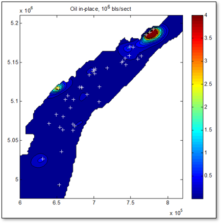
Regional Modeling#
Goal: Support strategic planning by understanding the large-scale spatial distribution of the resource.
Typical properties:
reservoir thickness
permeability-thickness
structural elevation
resource quality
Typical model:
Regional models cover hundreds to thousands of square kilometers using relatively large grid cells. Fine-scale geological variability is simplified while preserving large-scale trends important for field development, lease evaluation, and infrastructure planning.
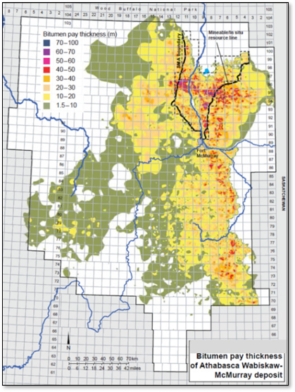
Micro- and Mini-Scale Modeling#
Goal: Understand pore-scale processes and transfer their effects to larger-scale reservoir models.
Typical properties:
pore geometry
mineralogy
fluid distribution
relative permeability
capillary pressure
Typical model:
Micro-models typically represent a single core plug or rock sample, while mini-models represent the scale of a single reservoir simulation cell. These models are commonly used to derive effective flow properties for larger-scale simulation models.
Image from Digital Rocks Portal.
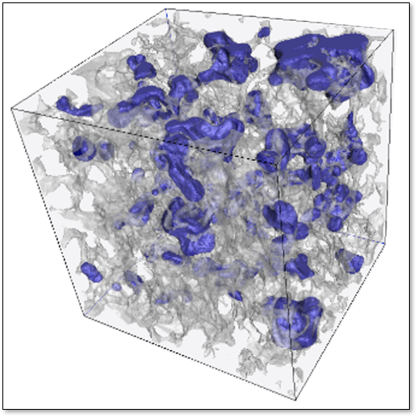
Reservoir Modeling#
Goal: Predict fluid flow and evaluate development scenarios.
Typical properties:
porosity
permeability
saturation
pressure
production history
seismic attributes
Typical model:
Reservoir models typically contain millions of grid cells with horizontal dimensions of tens of meters and vertical thicknesses of approximately 0.25–1.0 m. They integrate geological, geophysical, and engineering information to support flow simulation, history matching, and production forecasting.
Image from SEG Wiki.
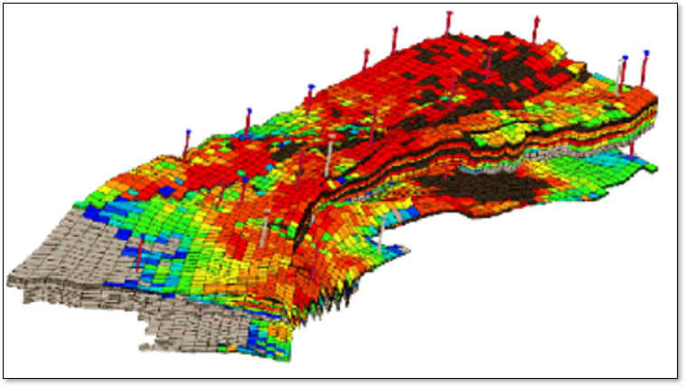
A Continuum of Models#
These examples illustrate that there is no single “subsurface model”. Instead,
models span a continuum of scales and objectives—from pore-scale physics, to reservoir flow simulation, to regional resource assessment.
The appropriate model is determined not by the available software, but by the questions the model is intended to answer.
About the Author#

Michael Pyrcz is a professor in the Cockrell School of Engineering, and the Jackson School of Geosciences, at The University of Texas at Austin, where he researches and teaches subsurface, spatial data analytics, geostatistics, and machine learning. Michael is also,
the principal investigator of the Energy Analytics freshmen research initiative and a core faculty in the Machine Learn Laboratory in the College of Natural Sciences, The University of Texas at Austin
an associate editor for Computers and Geosciences, and a board member for Mathematical Geosciences, the International Association for Mathematical Geosciences.
Michael has written over 100 peer-reviewed publications, a Python package for spatial data analytics, co-authored a textbook on spatial data analytics, Geostatistical Reservoir Modeling and author of two recently released e-books, Applied Geostatistics in Python: a Hands-on Guide with GeostatsPy and Applied Machine Learning in Python: a Hands-on Guide with Code.
All of Michael’s university lectures are available on his YouTube Channel with links to 100s of Python interactive dashboards and well-documented workflows in over 40 repositories on his GitHub account, to support any interested students and working professionals with evergreen content. To find out more about Michael’s work and shared educational resources visit his Website.
Want to Work Together?#
I hope this content is helpful to those that want to learn more about subsurface modeling, data analytics and machine learning. Students and working professionals are welcome to participate.
Want to invite me to visit your company for training, mentoring, project review, workflow design and / or consulting? I’d be happy to drop by and work with you!
Interested in partnering, supporting my graduate student research or my Subsurface Data Analytics and Machine Learning consortium (co-PIs including Profs. Foster, Torres-Verdin and van Oort)? My research combines data analytics, stochastic modeling and machine learning theory with practice to develop novel methods and workflows to add value. We are solving challenging subsurface problems!
I can be reached at mpyrcz@austin.utexas.edu.
I’m always happy to discuss,
Michael
Michael Pyrcz, Ph.D., P.Eng. Professor, Cockrell School of Engineering and The Jackson School of Geosciences, The University of Texas at Austin
More Resources Available at: Twitter | GitHub | Website | GoogleScholar | Geostatistics Book | YouTube | Applied Geostats in Python e-book | Applied Machine Learning in Python e-book | LinkedIn
Comments#
This was a basic description of subsurface modeling. This is all critical prerequisites for anyone working in data science, data analytics, geostatistics and machine learning in the subsurface. Much more could be done and discussed, I have many more resources. Also check out my textbook with Professor Clayton V. Deutsch Geostatistical Reservoir Modeling for much more details on this topic.
Check out my shared resource inventory and the YouTube lecture links at the start of this chapter with resource links in the videos’ descriptions.
I hope this was helpful,
Michael